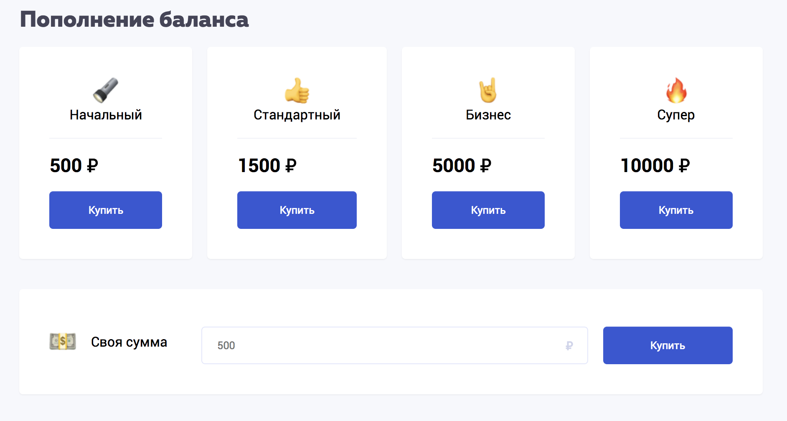
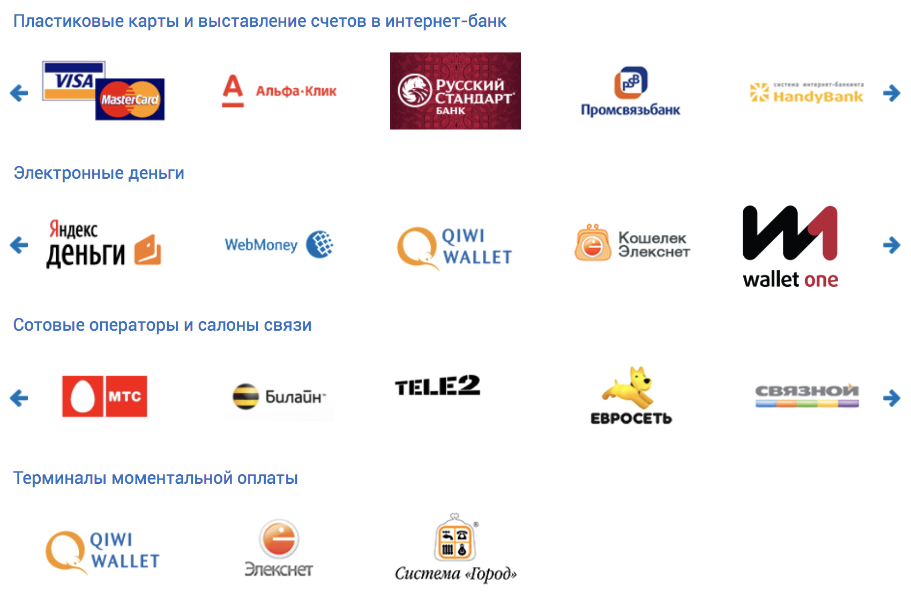
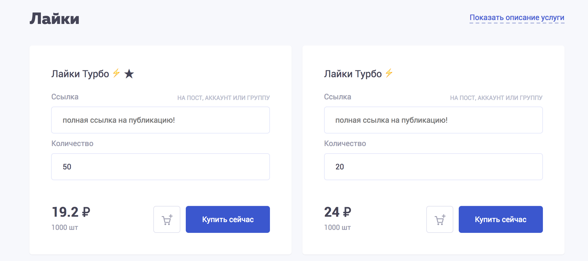
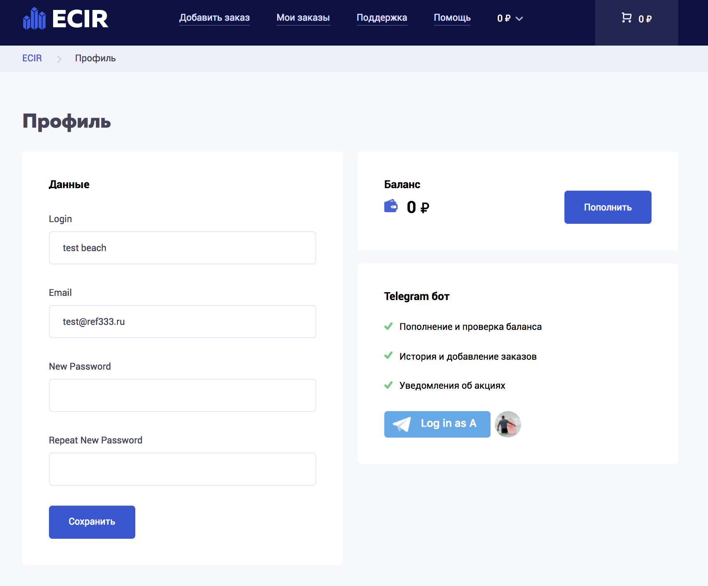

База знаний
Мы поддерживаем прием платежей через систему Робокасса. Для того, чтобы пополнить свой баланс, перейдите на эту страницу и выберите один из предложенных пакетов пополнения баланса или введите любую сумму в поле ниже:
После перехода на страницу оплаты в системе Робокасса вам будет предложено оплатить любым удобным способом, в данный момент Робокасса поддерживает:
Полный список можно посмотреть на сайте Робокассы.
После успешного платежа обязательно нажмите на кнопку "Вернуться в магазин" в системе робокассы, чтобы ваш платеж был произведен в автоматическом режиме. После этого ваш баланс в системе Ecir будет успешно пополнен.
Вы можете попросить возврат денежных средств потраченных на товары или услуги, оплаченные через систему ECIR при условии что товар оказался недоступен или удален из каталога. Ниже приведен полный список условий, при которых возможен возврат денежных средств:
- Удаление товара из каталога
- Отмена накрутки по техническим проблемам с нашей стороны
- Технические проблемы со стороны сервиса
При возникновении потребности в возврате денежных средств вам стоит написать в нашу службу технической поддержки и сообщить о своей проблеме, запросы на возврат обрабатываются в течении 48-96 часов, только через тикет систему ECIR.RU
Возврат денежных средств возможен только на ваш внутренний баланс в системе ECIR в сумме - равной сумме оплаты или остатка средств от выполненного / отменного заказа. Вывод денежных средств с баланса не поддерживается.
Служба безопастности может отказать вам в возврате денежных средств по следующим причинам
- ошибка пользователя при заполнении своих персональных данных
- заказ "нестабильного" товара
- ошибка в ссылке при заказе товара / услуги
1.1 Наша главная задача - максимально минимизировать возможные риски и сделать использование нашего сервиса безопасным, однако мы не можем нести ответственность за ваши аккаунты, ваш бизнес, ваши результаты.
1.2 Наряду с обеспечением общей безопасности, мы применяем комплекс мер по обеспечению конфиденциальности при работе с личными данными, но в случае непредвиденной утечки информации ответственности также не несем. Рынок гибок, и мы всегда адекватно реагируем на изменение цен наших услуг.
2.1 Изложенные в прайс листе цены не являются статичными и могут быть изменены как в сторону повышения, так и в сторону снижения.
2.2 Мы трепетно относимся к клиентам и взятым на себя обязательствам, но указанные сроки выполнения работ, а также критерии не являются точными в 100% ситуаций. Любая накрутка имеет коэффициент списаний.
3.1 Исходя из этого мы можем запустить докрутку, но не более 1 раза (Для клиентов заказавших услугу с гарантией!).
3.2 На аккаунты с количеством подписчиков свыше 100.000, гарантия не распространяется, т.к. невозможно отследить какие именно подписчики списываются.
3.3 Мы не даём гарантии что 100% аккаунтов во всех опциях используемых для накрутки имеют аватары, описание, регулярные публикации и являются активными.
3.4 Мы даем гарантию на то что выбранная вами услуга будет оказана вам в полном объеме, согласно описанию.
Процесс накрутки4.1 Во время накрутки (с момента ее начала до окончания) ваш аккаунт должен быть открытым, а логин/ник/адрес страницы не должен изменяться! В противном случае мы не сможем осуществить услуги.
4.2 Запрещается одновременное включение нескольких однотипных заданий, или же накрутка с помощью разных сайтов/сервисов, в некоторых случаях по технологическим особенностям процесса накрутки это может повлечь за собой оказание услуги не в полном объёме. Денежные средства на личный счёт клиента на сайте в этом случае возвращены быть не могут.
Технические особенности5.1 Время от времени сайт может приостанавливать оказание услуг, это связано с улучшением вопросов безопасности и улучшения сервиса.
Работа с клиентами6.1 В случае технических неполадок или вопросов по работе сервиса вы можете отправить свой вопрос в разделе «контакты» сайта и получить ответ в течение 24 с момента подачи заявки.
Важно!7.1 Запуск и осуществление заказа является необратимым процессом для любого вида накрутки!
7.2 Отмена заказов невозможна, ни при каких обстоятельствах! Если была допущена ошибка, заказ будет отменен автоматически в течение 72 часов.
7.3 Мы вправе отказать вам в оказании услуг в случае размещения вами запрещенных материалов (пропагандирующих экстремизм, педофилию, терроризм и д.р. запрещенные УК РФ материалы).
Возврат средств8.1 Возврат (вывод с сайта) денежных средств клиенту возможен лишь в случае прекращения работы сервиса.
Блокировка в сервисе9.1 Попытка взлома сайта, накрутки средств, обмана или оскорбительного общения с администрацией сервиса считается нарушением правил и влечет за собой перманентную блокировку аккаунта без возможности возврата средств.
В разделе формы быстрого заказа на главной странице нашего сервиса, а также в разделе "Новый заказ" внутри системы вы можете найти условные обозначение для товаров, по которым вы сразу сможете понять тип товара:
- ⚡️ - Быстрый запуск
- ★ - Популярная услуга
- ♻️ - Гарантия (Докрутка) /li>
- ⛔️ - Задержки/нестабильные
В нашей системе предусмотрены статусы для отслеживание выполнения своего заказа. Ниже приведен список статусов, который может быть у ваших заказов с расшифровками:
- Pending - этот статус обозначает, что ваш заказ находится в очереди и скоро начнет свое выполнение. Читайте внимательно описание услуги - там указана скорость запуска.
- In progress - этот статус обозначает, что ваш заказ находится в прогрессе и уже выполняется.
- Complete - этот статус обозначает, что ваш заказ выполнен.
- Cancel - этот статус обозначает, что ваш заказ отменен. Пишите в поддержку если видите такой статус.
- Not found - этот статус обозначает в ссылке вашего заказа допущена ошибка, внимательно читайте правила для ссылок перед оформлением заказа - если видите такой статус у своего заказа - пишите в поддержку.
- Partially - Частично - Заказ завершен, но не до конца, остаток средств возвращен на баланс.
- ⚡️ - Быстрый запуск
- ★ - Популярная услуга
- ♻️ - Гарантия (Докрутка)
- ⛔️ - Задержки/нестабильные
Причины автоматической отмены
- Временная ошибка сервера.
- Нестабильная услуга.
- Не соблюдены условия к аккаунту.
- Аккаунт закрыт/Нет аватарки.
- Несуществующая ссылка.
- Ссылка в неверном формате.
Отмена заказов невозможна, ни при каких обстоятельствах! Если была допущена ошибка, заказ будет отменен автоматически в течение некоторого времени.
Претензии по нестабильным, тестовым и запасным услугам не принимаются!
Пользуясь нашим сервисом, вы полностью соглашаетесь с этим!
Мы следим за качеством своих товаров и каждый день обновляем каталог товаров. За всеми изменениями вы можете следить на нашем Telegram канале. Каждый день мы удаляем и добавляем новые качественные товары в систему ECIR для предоставления лучшего качества товаров для наших пользователей. Удаление товаров связано с техническими проблемами той или иной социальной сети а также с техническими проблемами у наших поставщиков, добавление новых товаров частично или полностью компенсирует удаление товаров и все новые товары, добавленные в каталог более лучшего качества чем удаленные.
В нашем каталоге товаров представлено большое количество товаров и услуг для различных социальных сетей. В нашем каталоге представлены товары для:
- YouTube
- Telegram
- Вконтакте
В каталоге товаров можно найти различные варианты одинаковых по названию товаров, но каждый товар отличается от другого товара скоростью накрутки, качеством аккаунтов и стабильностью работу, прочитать более подробно про каждый товар вы можете нажав на кнопку "Детали" в разделе "Новый заказ" на карточке каждого отдельного товара в верхнем правом углу.
При оформлении заказа всегда правильно указывайте ссылку на свой аккаунт / группу / паблик согласно правилам системы. Для разного типа товаров у нас предусмотрены правила ссылок, найти эти правила можно прямо на самой карточке товара в графе "ссылка".
Примеры правил:
Если вы обнаружили баг или ошибку системы, обязательно отправляйте нам, мы это поощряем и даем бонусы, например при обнаружении критичного бага или ошибки системы мы с радостью накинем пару сотен рублей вам на баланс, помогите нам улучшить систему и сделать ее более стабильной и удобной для вас!
Причины автоматической отмены
- Временная ошибка сервера.
- Нестабильная услуга.
- Не соблюдены условия к аккаунту.
- Аккаунт закрыт/Нет аватарки.
- Несуществующая ссылка.
- Ссылка в неверном формате.
Отмена заказов со стороны клиента после его оплаты невозможна, ни при каких обстоятельствах! Если была допущена ошибка, заказ будет отменен автоматически в течение некоторого времени.
Претензии по нестабильным, тестовым и запасным услугам не принимаются.
Пользуясь нашим сервисом, вы полностью соглашаетесь с этим.
В нашей системе вы можете использовать рефферальную систему для привлечения новых пользователей в нашу систему ECIR и получать прибыль и зарабатывать деньги с оплат своих привлеченных партнеров.
Условия работы партнерской системы:
- Вы получаете 5% от всех оплат ваших партнеров
- Свою рефферальную ссылку вы можете получить в этом разделе
- Количество привлеченных партнеров неограничено
- Вывод рефферальных средств возможен на любой электронный кошелек или карточку VISA / MasterCard
Мы предлагаем вам рефферальную систему для заработка денег на нашей системе ECIR. Вы можете использовать некоторые наши рекомендации чтобы привлечь больше партнеров и заработать денег на привлеченных партнерах:
- Рекламируйте сервис ECIR используя свою рефферальную ссылку в социальных сетях
- Делайте обзоры на сервис ECIR на форумах и тематических площадках используя в обзоре свою рефферальную ссылку
- Снимайте видео-обзоры на сервис ECIR и выкладывайте на видео-хостинге, добавляя в описании видео свою рефферальную ссылку
- Публикуйте посты с кратким обзором на сервис ECIR в Telegram каналах и чатах используя свою рефферальную ссылку
И многое многое другое, вариантов использования и привлечения новых партнеров - сотни. Дальше уже все зависит от вас, а для крупных ресселеров по партнерской программе мы увеличиваем процент отчислений до 15%
По любым вопросам вы можете обратиться в нашу службу технической поддержки через тикет систему Zendesk, на нашем сайте вы всегда найдете кнопку «Помощь» в нижнем правом углу сайта. Заполняйте форму обращения и в течении 2 часов вы получите ответ на свой вопрос.
Напоминаем вам, что время обработки вашего запроса может составлять от 24 до 72 часов. Время работы нашего технического отдела: с пн. по пт. с 10 утра до 18 вечера по МСК.
Помимо тикет-системы вы можете найти ответ, на интересующий вас вопрос в нашей Базе Знаний, которая будет наполняться по мере накопления в нашей тех. поддержке однотипных вопросов.
Условия использования
1. Общие условия
1.1. Настоящая Политика определяет порядок обработки и защиты сайтом ecir информации о физических лицах (далее – Пользователь), которая может быть получена сайтом ecir при использовании Пользователем услуг/товаров, неисключительной лицензии предоставляемых в том числе посредством сайта, сервисов, служб, программ используемых сайтом ecir и/или Аффилированными лицами (далее – Сайт, Сервисы).
1.2. Целью настоящей Политики является обеспечение надлежащей защиты персональной информации которую Пользователь предоставляет о себе самостоятельно при использовании Сайта, Сервисов или в процессе регистрации (создании учетной записи), для приобретения товаров/услуг, неисключительной лицензии от несанкционированного доступа и разглашения.
1.3. Отношения, связанные со сбором, хранением, распространением и защитой информации предоставляемой Пользователем, регулируются настоящей Политикой, иными официальными документами сайтом ecir и действующим законодательством Российской Федерации.
1.4. Регистрируясь на Сайте и используя Сайт и Сервисы Пользователь выражает свое полное согласие с условиями настоящей Политики.
1.5. В случае несогласия Пользователя с условиями настоящей Политики использование Сайта и/или каких-либо Сервисов доступных при использовании Сайта должно быть немедленно прекращено.
1.6. В случае не согласия Пользователя в получении информации от сайтом ecir и/или Аффилированных лиц
- кликнув по ссылке Отписаться внизу письма
- в личном кабинете на Сайте, путем снятия ранее выбранных опций
- путем направления уведомления на электронную почту support@ecir или при телефонном обращении в контакт-центр.
При поступлении уведомлений на электронную почту support@ecir или при телефонном обращении в контакт-центр в специальном программном обеспечении для учета действий по соответствующему Пользователю, создается обращение по итогам полученной от Пользователя информации. Обращение обрабатывается максимум в течение 72 часов. В результате информация о Пользователе не включается в сегмент рассылок по соответствующему региону.
2. Цели сбора, обработки и хранения информации предоставляемой пользователями Сайта
2.1. Обработка персональных данных Пользователя осуществляется в соответствии с законодательством Российской Федерации. Сайт ecir обрабатывает персональные данные Пользователя в целях:
- идентификации стороны в рамках соглашений и договоров заключаемых с Сайт ecir и/или Аффилированными лицами
- предоставления Пользователю товаров/услуг, неисключительной лицензии, доступа к Сайту, Сервисам
- связи с Пользователем, направлении Пользователю транзакционных писем в момент получения заявки регистрации на Сайте или получении оплаты от Пользователя, разово, если Пользователь совершает эти действия, направлении Пользователю уведомлений, запросов
- направлении Пользователю сообщений рекламного и/или информационного характера — не более 1 сообщения в день
- проверки, исследования и анализа таких данных, позволяющих поддерживать и улучшать сервисы и разделы Сайта, а также разрабатывать новые сервисы и разделы Сайта
- проведение статистических и иных исследований на основе обезличенных данных.
3. Условия обработки персональной информации предоставленной Пользователем и ее передачи третьим лицам
3.1. Сайт ecir принимает все необходимые меры для защиты персональных данных Пользователя от неправомерного доступа, изменения, раскрытия или уничтожения.
3.2. Сайт ecir предоставляет доступ к персональным данным Пользователя только тем работникам, подрядчикам и Аффилированным лицам которым эта информация необходима для обеспечения функционирования Сайта, Сервисов и оказания Услуг, продажи товаров, получении неисключительной лицензии Пользователем.
3.3. Сайт ecir вправе использовать предоставленную Пользователем информацию, в том числе персональные данные, в целях обеспечения соблюдения требований действующего законодательства Российской Федерации (в том числе в целях предупреждения и/или пресечения незаконных и/или противоправных действий Пользователей). Раскрытие предоставленной Пользователем информации может быть произведено лишь в соответствии с действующим законодательством Российской Федерации по требованию суда, правоохранительных органов, а равно в иных предусмотренных законодательством Российской Федерации случаях.
3.4. Сайт ecir не проверяет достоверность информации предоставляемой Пользователем и исходит из того, что Пользователь в рамках добросовестности предоставляет достоверную и достаточную информацию, заботится о своевременности внесения изменений в ранее предоставленную информацию при появлении такой необходимости, включая но не ограничиваясь изменение номера телефона
4. Условия пользования Сайтом, Сервисами
4.1. Пользователь при пользовании Сайтом, подтверждает, что:
- обладает всеми необходимыми правами, позволяющими ему осуществлять регистрацию (создание учетной записи) и использовать Услуги сайта
- указывает достоверную информацию о себе в объемах, необходимых для пользования Услугами Сайта, обязательные для заполнения поля для дальнейшего предоставления Услуг сайта помечены специальным образом, вся иная информация предоставляется пользователем по его собственному усмотрению
- осознает, что информация на Сайте, размещаемая Пользователем о себе, может становиться доступной для третьих лиц не оговоренных в настоящей Политике и может быть скопирована и распространена ими
- ознакомлен с настоящей Политикой, выражает свое согласие с ней и принимает на себя указанные в ней права и обязанности. Ознакомление с условиями настоящей Политики и проставление галочки под ссылкой на данную Политику является письменным согласием Пользователя на сбор, хранение, обработку и передачу третьим лицам персональных данных предоставляемых Пользователем
4.2. Сайт ecir не проверяет достоверность получаемой (собираемой) информации о Пользователях, за исключением случаев, когда такая проверка необходима в целях исполнения обязательств перед Пользователем.
5. В рамках настоящей Политики под «персональной информацией Пользователя» понимаются:
5.1. Данные предоставленные Пользователем самостоятельно при пользовании Сайтом, Сервисами включая но, не ограничиваясь: имя, фамилия, пол, номер мобильного телефона и/или адрес электронной почты, семейное положение, дата рождения, родной город, родственные связи, домашний адрес, информация об образовании, о роде деятельности.
5.2. Данные, которые автоматически передаются Сервисам в процессе их использования с помощью установленного на устройстве Пользователя программного обеспечения, в том числе IP-адрес, информация из cookie, информация о браузере пользователя (или иной программе, с помощью которой осуществляется доступ к Сервисам), время доступа, адрес запрашиваемой страницы.
5.3 Иная информация о Пользователе, сбор и/или предоставление которой определено в Регулирующих документах отдельных Сервисов Сайт ecir.
6. Изменение и удаление персональных данных
6.1. Пользователь может в любой момент изменить (обновить, дополнить) предоставленную им персональную информацию или её часть, а также параметры её конфиденциальности, воспользовавшись функцией редактирования персональных данных в разделе, либо в персональном разделе соответствующего Сервиса. Пользователь обязан заботится о своевременности внесения изменений в ранее предоставленную информацию, ее актуализации, в противном случае Сайт ecir не несет ответственности за неполучение уведомлений, товаров/услуг и т.п.
6.2. Пользователь также может удалить предоставленную им в рамках определенной учетной записи персональную информацию. При этом удаление аккаунта может повлечь невозможность использования некоторых Сервисов.
7. Изменение Политики конфиденциальности. Применимое законодательство
7.1. Сайт ecir имеет право вносить изменения в настоящую Политику конфиденциальности. При внесении изменений в актуальной редакции указывается дата последнего обновления. Новая редакция Политики вступает в силу с момента ее размещения, если иное не предусмотрено новой редакцией Политики. Действующая редакция всегда находится на странице по адресу https://ecir/confidential/.
7.2. К настоящей Политике и отношениям между Пользователем и Сайт ecir возникающим в связи с применением Политики конфиденциальности, подлежит применению право Российской Федерации.
8. Обратная связь. Вопросы и предложения
8.1. Все предложения или вопросы по поводу настоящей Политики следует сообщать в Службу поддержки Сайт ecir по электронной почте support@ecir
Франшиза ECIR
Готовый бизнес по франшизе - Запустите свой SMM-сервис для раскрутки Социальных сетей и развивайте свой бизнес удаленно из любой точки мира! Это одна из лучших франшиз стоимостью до 500$
Работая по франшизе с ECIR наш дилер получает:
- ✅ Результат многолетней работы команды
- ✅ Готовый бизнес с расчетами
- ✅ Команду разработчиков и технической поддержки
- ✅ Базу Знаний и наш опыт в PR и Маркетинге
- ✅ Бизнес план на годы вперед
- ✅ Cильнейшая команда специалистов SMM-маркетинга
- ✅ Минимальную стоимость за накрутку
Привет, я бот сервиса ecir.ru и сейчас я расскажу тебе, что я умею, какие команды знаю и чем могу быть тебе полезен. Начнем по порядку:
Самое главное:
Для корректной работы бота авторизуйтесь на нашем сайте и затем подключите свой Telegram аккаунт к нашему сервису в разделе профиль.
 Нажмите на кнопку "Log in as"{kind=link}
Без этой интеграции вы не сможете пополнять и проверять свой баланс и отслеживать свои заказы в системе. Мы не храним и не передаем вашу персональную информацию, более подробно о политике конфиденциальности персональных данных вы можете прочитать в разделе Политика на нашем сайте.
Список поддерживаемых команд: Сервис:- /catalog - открыть каталог товаров
- /orders - мои последние заказы
- /balance - пополнить баланс
- /checkbalance - проверить баланс
- /price - прайс лист
- /helpdesk - открыть базу знаний
- /support - помощь
- /terms - правила использования
- /news - новости проекта
- /help - показать это сообщение
Помощь:
По любым вопросам вы можете обращаться в нашу службу технической поддержки через @ecir_support_bot; Наш технический отдел работает с понедельника по пятницу с 10 утра до 19 вечера по Московскому времени.
Новый заказ:
- Для оформления нового заказа напишите команду /start
- После этого напишите команду /catalog и выберите Социальную сеть, куда будете заказывать накрутку нажав на нужную кнопку.
- Далее выберите интересующий вас товар из списка. Если вы не видите полного названия товара, просто переверните свой экран в горизонтальное положение.
- Внимательно изучите правила для указания ссылки на свой аккаунт / группу / пост. Ознакомьтесь с правилами накрутки выбранного товара, внимательно проверьте скорость накрутки и требования к аккаунту. Отмена заказов невозможна, ни при каких обстоятельствах. Если была допущена ошибка, заказ будет отменен автоматически в течение некоторого времени. Претензии по нестабильным, тестовым и запасным услугам не принимаются. Пользуясь нашим сервисом, вы полностью соглашаетесь с его правилами.
- Укажите ссылку на свой аккаунт / группу / пост
- Укажите количество товара для накрутки
- Если вы ввели слишком много или слишком мало - бот поправит вас и укажет лимиты для выбранного типа товара